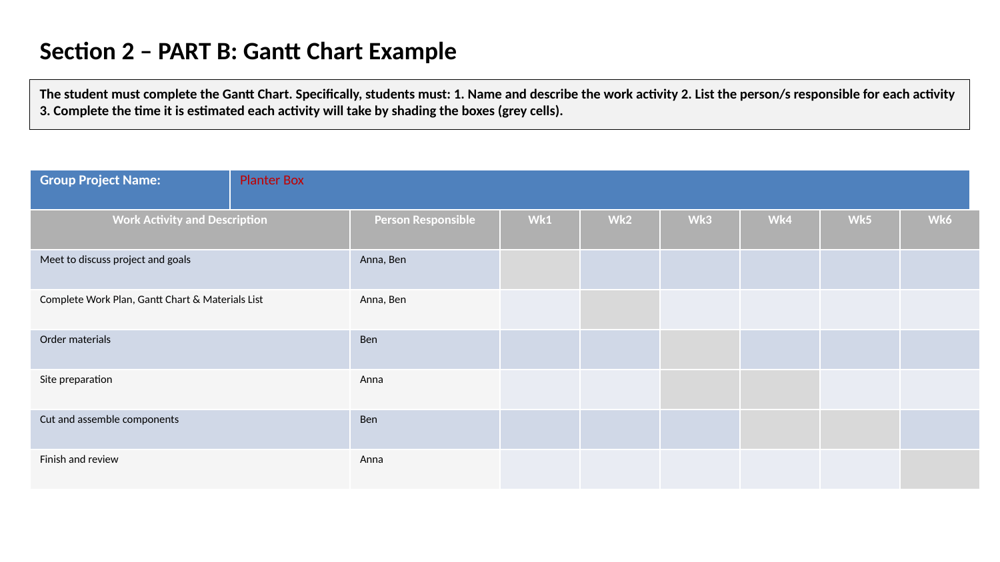

Scheduling with Gantt Charts
A Gantt chart is a visual project management tool that illustrates a project schedule over time. It helps teams plan, coordinate, and track their work effectively.
Key Features of a Gantt Chart:
- Work Activities: The vertical axis lists all the tasks that need to be completed, broken down from the overall project.
- Timeline: The horizontal axis represents the project timeline, broken down into days, weeks, or months.
- Task Bars: Each task is represented by a horizontal bar. The length and position of the bar show the start date, end date, and duration of the task.
- Responsibilities: The chart clearly shows who is responsible for completing each task.
- Dependencies: It visually shows how tasks relate to each other. For example, you can't start "Assemble planter box" until "Hand cut planter box components" is finished.
See Example: This example is for reference only and does not match your assessment tasks.
By filling out a Gantt chart, you create a clear, visual roadmap for the entire project, which helps to keep everyone on track and ensures the project is completed in a logical and timely manner.
On-Site Application: Orientating a Site Plan
One of the first practical steps on any job site is to orientate the site plan. This means physically aligning the paper plan with the actual land it represents so that what you see on the plan matches what you see in front of you.
How to Orientate a Site Plan:
- Access the Site Plan: Get the correct, most up-to-date version of the site plan.
- Stand on Site: Position yourself within the boundaries of the property.
- Use the North Pointer: Find the North Pointer symbol on the plan. Use a compass (or a compass app on a phone) to find North in the real world. Turn the plan until the North Pointer on the paper is pointing in the same direction as true North.
- Use Key Features to Confirm: Once you think the plan is orientated, confirm it by matching features on the plan to what you can see around you. This can include:
- The location of the street.
- The position of existing buildings (like a neighbour's house or a shed).
- The location of significant trees or other landmarks.
- The general shape of the property boundaries.
Correctly orientating the plan is essential for accurately setting out the building and ensuring it is constructed in the correct location and position on the block.